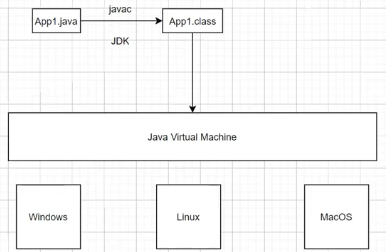

É comum que se veja por aí o slogan do Java: “Escreva uma vez, rode em qualquer lugar”. Por que isso?
Normalmente a coisa funciona assim: o computador e todos os seus recursos físicos, ou seja, as memórias, o processador, os periféricos etc., são controlados através de um software especial que é o sistema operacional, o OS. Há vários, e dentre os mais conhecidos estão os famosos Linux, MacOs e Windows. Para que outros programas possam rodar e acessar os mesmos recursos do mesmo computador, eles têm que fazer isso indiretamente, usando o OS, e portanto tendo que ser entendidos pelo OS, falando a língua dele. Um determinado software, com seu código específico, consegue falar com um único OS. Para poder levar o mesmo programa a outros sistemas operacionais só existem dois caminhos: fazer um novo código para o outro OS (o que encarece a produção e pode ser inviável para desenvolvedores isolados ou empresas pequenas), ou rodar em uma versão virtual do seu OS original por cima de outro OS (o que dá trabalho para o usuário e é pesado para a máquina, e nem todo mundo está devidamente preparado para enfrentar essa situação).
O pessoal do Java pensou, portanto, em fazer uma VM, de virtual machine, ou máquina virtual, não para rodar um OS em outro, como por exemplo o Windows no Linux ou no Mac, mas apenas para rodar o Java sobre um OS. Isso também consome algo da máquina, posto que é mais um intermediário, mas um intermediário superespecializado e, portanto, muito eficiente e rápido, e que exige muito pouco do usuário para poder ser instalado corretamente. Essa é a JVM, a Java Virtual Machine.
Quem desenvolve em Java não precisa se preocupar a respeito do OS. A Oracle, que é a dona do Java, é que se preocupa com isso, mantendo sempre à disposição diversas versões da JVM, para que os diversos OS do mercado sempre possam rodar um programa em Java. Por isso pode-se escrever só uma vez e rodar em todo lugar.
Isso é possível porque o Java é uma linguagem compilada e interpretada ao mesmo tempo. Um programa em Java, cujos arquivos são `.java`, devem ser compilados, o que é um processo que já bloqueia erros antes de ser feito, e gera um arquivo de extensão `.class`, que é lido pela JVM. Mas a JVM não poderia ler o `.java`? Aí é que está. O Java é a linguagem do desenvolvedor, de alto nível, e não do computador. Isso significa que ele tem que ser traduzido para a máquina, e se isso for feito em tempo real, de execução, fica muito lento e arriscado, devido a essa diferença grande entre a linguagem do desenvolvedor e a linguagem de máquina. O que se faz é compilar de Java para Bytecode (essa é a linguagem do arquivo `.class`), que é outra linguagem, mas desta vez uma linguagem para uma máquina, de baixo nível, e portanto muito mais leve e rápida de ser processada por uma máquina. Só que essa máquina é a JVM, e não o OS ou o computador. A JVM traduz de novo o Bytecode para o OS, mas essa parte é super rápida; é o passo que faz do Java uma linguagem interpretada. É verdade, porém, que quem está sendo interpretado é na verdade o Bytecode, e não o Java. O Bytecode, por sua vez, é tão mais próximo da linguagem de máquina que é fácil, rápido e sem riscos traduzi-la em tempo de execução diretamente para o OS. Isso significa que para rodar, um programa em Java é primeiro compilado em Bytecode a partir do que o desenvolvedor escreveu, e esse Bytecode, que é leve e rápido de ser traduzido pela JVM, é interpretado pela JVM em tempo de execução para rodar sobre o OS. Por isso se diz, mais uma vez, que Java é uma linguagem ao mesmo tempo compilada e interpretada.
Para desenvolver em Java, precisamos instalar um JDK, Java Development Kit. Uma JDK já vem com uma JVM, mas também com o compilador para `.class` e vários outros recursos de desenvolvimento. Há a opção de instalar apenas a JRE, que é um subconjunto da JDK, e que é suficiente para rodar o código, mas nós aqui vamos trabalhar com a JDK e pegar todos os recursos.
Aqui abaixo está o esquema da Oracle para o Java, inteiro: